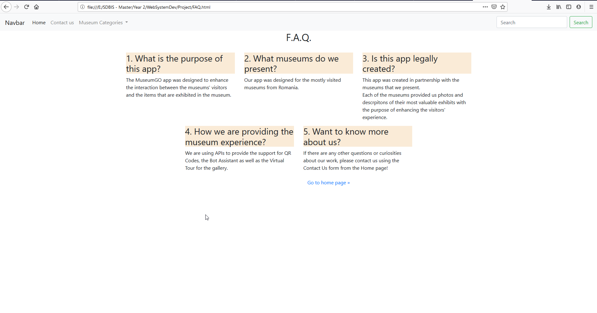

Community Draft
We are 3 students from Software Development master: Alex, Robert and Marius and we are trying to make an app that will help museum lovers to find all the information they need, in order to create an unforgettable experience. We thought of naming it MuseFind.
We proposed an app where people can easily find information about museums from Romania. It is called “MuseFind”. Also, we want to include a live gallery, so visitors can surf through our webpage and discover the paintings, sculptures and other secrets the museums hold.
We came up with this idea because we believe it is an interesting way to share knowledge and it could attract more people to visit Romania.
The structure of our website will have a homepage, a page about us and a page for each museum. We will also have a feature where the visitors of our website could add a museum to favorites.
We developed our solution using HTML and CSS.
The Home Page is split into 3 main sections:
Each of the images of the museums in the list is a hyperlink towards the Museum's official website.
There, the user can find more specific details about the museum and its exhibition, content and other things that he/she may be interested in.
The Frequently Asked Questions button has the purpose of redirecting the user to a Help page, in order to help the user understand the purpose of the application and how to properly use it.

We will use an QR code in order for our visitors to have a much easier way to acces our website. We will also use a QR code for each item displayed in the museums. For this we will use a MetaQRcode API.
The METAQRCODE API provides developers a way to create their own XML metadata and put it inside a QRCode. This API is Rest based, and can be consumed using JSON or XML. Using MetaQRcode you can upload your XML document and associate it to a QRcode.
An XML document into MetaQRcode is called Repository Entry. In MetaQRcode the repository is the container of all repository entries, so the repository is the container of all XML documents. Each XML document inside MetaQRcode has to be associated with at least one XSD.
In MetaQRcode an XSD is called Catalog Entry. The Catalog is the container of all XSD.When you upload an XML you have to specify one or more XSD. The XML have to comply with the given XSD. MetaQRcode will check compliance during upload phase. When you upload an XML you can specify one XSD using API (outside the XML) or you can specify one or more XSD inside the XML document.
MetaQRcode expose REST json and REST xml API. Some API needs authentication to proceed. To authenticate to MetaQRcode you can use two methods:
Each XML you want to upload on MetaQRcode has to comply with a given XSD (catalog entry).You can use an existing XSD or upload your own. Every XSD are shared between all users. It's important to verify if the XSD you need it's already present in catalog before upload a new one.
It's important to reduce number of similar XSD inside MetaQRcode server. This is the reason for which in XSD you can use import, inclusion, extensions and all standard XSD feature. To use that features, you always have to refer to an existing schema by using it's MetaQRcode URL.
Once uploaded previous catalog entry (XSD) you can upload a new repository entry (XML) using that catalog entry (XSD).
You have two ways to have your repository entry (XML) referring to a catalog entry (XSD):
After repository entry (XML) upload you can get the QRCODE corresponding to your xml using data.QRcodeGet (as shown previously).
QRCODE is generated as image in PNG format. Size of generated QRcode is 210px x 210px because we suppose that you will print it in minimum 300dpi resolution. If you print with this resolution you will have a QRcode of 0,7x0,7 inch (18x18 mm). You can resize the PNG received depending on quality of your print. If you print using a 600dpi resolution, you can print your QRcode using half dimensions (0,35x0,35 inch -> 9x9 mm).
These are only theoretical calculations, in the real world you have to do some experiment to check best result in your scenario.To verify result of your MetaQRcode print you can use many app. The first you can use is the zxing mobile app : https://play.google.com/store/apps/details?id=com.google.zxing.client.android. Zxing is an opensource project (https://github.com/zxing, https://zxingnet.codeplex.com/) available in many technologies (java, .net, etc.).
For the use of natural user interactions we could use a conversational user interface provided by Azure Bot Services.
Azure Bot Service and Bot Framework provide tools to build, test, deploy, and manage intelligent bots all in one place. Through the use of modular and extensible framework provided by the SDK, tools, templates, and AI services developers can create bots that use speech, understand natural language, handle questions and answers, and more.
Bots provide an experience that feels less like using a computer and more like dealing with a person - or at least an intelligent robot. They can be used to shift simple, repetitive tasks, such as taking a dinner reservation or gathering profile information, on to automated systems that may no longer require direct human intervention. Users converse with a bot using text, interactive cards, and speech. A bot interaction can be a quick question and answer, or it can be a sophisticated conversation that intelligently provides access to services.
Bots are a lot like modern web applications, living on the internet and use APIs to send and receive messages. What's in a bot varies widely depending on what kind of bot it is. Modern bot software relies on a stack of technology and tools to deliver increasingly complex experiences on a wide variety of platforms. However, a simple bot could just receive a message and echo it back to the user with very little code involved.
Bots can do the same things other types of software can do - read and write files, use databases and APIs, and do the regular computational tasks. What makes bots unique is their use of mechanisms generally reserved for human-to-human communication.
Azure Bot Service and Bot Framework offer:
Additionally, bots may use other Azure services, such as:
Azure Bot Service and Bot Framework offer an integrated set of tools and services to facilitate this process. Choose your favorite development environment or command line tools to create your bot. SDKs exist for C#, JavaScript, and Typescript. (SDKs for Java and Python are under development.) We provide tools for various stages of bot development to help you design and build bots.

As with any type of software, having a thorough understanding of the goals, processes and user needs is important to the process of creating a successful bot. Before writing code, review the bot design guidelines for best practices and identify the needs for your bot. You can create a simple bot or include more sophisticated capabilities such as speech, natural language understanding,and question answering.
Your bot is a web service that implements a conversational interface and communicates with the Bot Framework Service to send and receive messages and events. Bot Framework Service is one of the components of the Azure Bot Service and Bot Framework. You can create bots in any number of environments and languages. You can start your bot development in the Azure portal, or use [C# | JavaScript] templates for local development.
As part of the Azure Bot Service and Bot Framework, we offer additional components you can use to extend your bot's functionality
Feature |
Description |
Link |
Add natural language processing |
Enable your bot to understand natural language, understand spelling errors, use speech, and recognize the user's intent |
How to use LUIS |
Answer questions |
Add a knowledge base to answer questions users ask in amore natural, conversational way |
How to use QnA Maker |
Manage multiple models |
If using more than one model, such as for LUIS and QnA Maker, intelligently determine when to use which one during your bot's conversation |
Dispatch tool |
Add cards and buttons |
Enhance the user experience with media other than text, such as graphics, menus, and cards |
How to add cards |
Note
The table above is not a comprehensive list. Explore the articles on the left, starting with sending messages, for more bot functionality.
Additionally, we provide command line tools to help you to create, manage, and test bot assets. These tools can configure LUIS apps, build a QnA knowledge base, build models to dispatch between components, mock a conversation, and more. You can find more details in the command line tools readme.
You also have access to a variety of samples that showcase many of the capabilities available through the SDK. These are great for developers looking for a more feature rich starting point.
Bots are complex apps, with a lot of different parts working together. Like any other complex app, this can lead to some interesting bugs or cause your bot to behave differently than expected. Before publishing, test your bot. We provide several ways to test bots before they are released for use:
When you are ready for your bot to be available on the web, publish your bot to Azure or to your own web service or data center. Having an address on the public internet is the first step to your bot coming to life on your site, or inside chat channels.
Connect your bot to channels such as Facebook, Messenger, Kik, Skype, Slack, Microsoft Teams, Telegram, text/SMS, Twilio, Cortana, and Skype. Bot Framework does most of the work necessary to send and receive messages from all of these different platforms - your bot application receives a unified, normalized stream of messages regardless of the number and type of channels it is connected to. For information on adding channels, see channels topic.
Use the data collected in Azure portal to identify opportunities to improve the capabilities and performance of your bot. You can get service-level and instrumentation data like traffic, latency, and integrations. Analytics also provides conversation-level reporting on user, message, and channel data. For more information, see how to gather analytics.